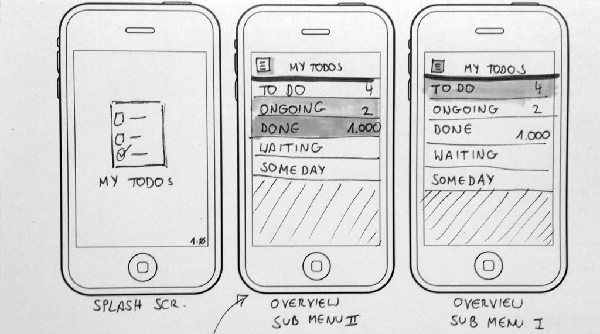

Los prototipos son modelos o representaciones tempranas de un producto o sistema que se utilizan en el proceso de diseño para probar y validar conceptos, funciones y características antes de la implementación final. Los prototipos son herramientas esenciales en el diseño de productos, interfaces de usuario y sistemas, y pueden variar en complejidad y propósito.
Existen 2 tipos de protipos:
Prototipos de Baja Fidelidad

Modelos simples y no funcionales que se utilizan para visualizar conceptos.
Prototipos de Alta Fidelidad

Modelos más avanzados que ofrecen más detalle y precisión del producto, incluso pueden ser funcionales y asemejarse más a la versión final del producto o sistema.